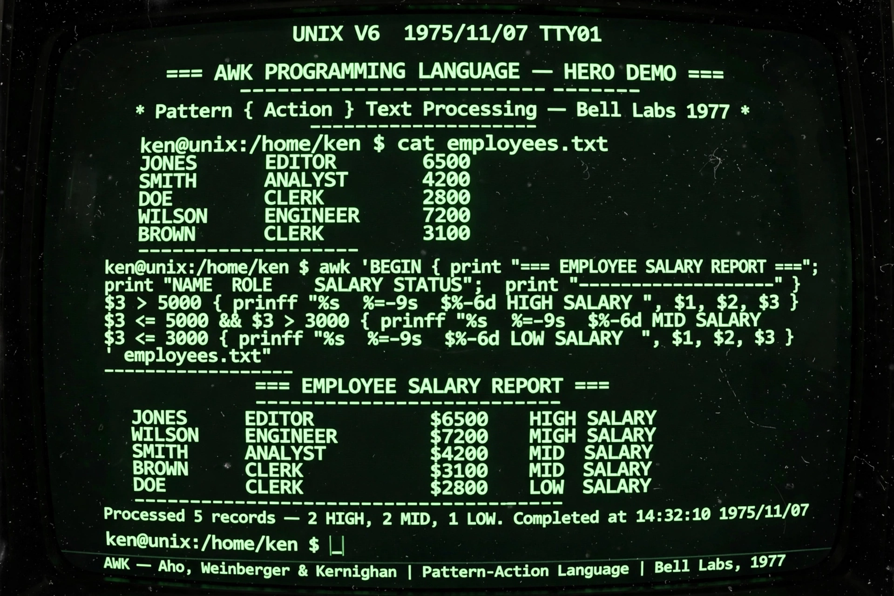

AWK is a domain-specific programming language designed for text processing and data extraction, developed at Bell Labs in the 1970s by Alfred Aho, Peter Weinberger, and Brian Kernighan — whose surnames give AWK its name. It remains a standard Unix utility for pattern scanning and processing.

| AWK | |
|---|---|
| Designed by | Aho, Weinberger, Kernighan |
| First appeared | 1977 |
| Implementations | AWK, NAWK, Gawk, Mawk, BWK awk |
An AWK program consists of pattern–action pairs: for each input line matching a pattern (often a regular expression), the action runs. Input is automatically split into fields ($1, $2, …, with $0 the whole line), making columnar data trivial to process, e.g. awk '{print $1, $3}' file. BEGIN and END blocks handle setup and summaries. The AWK Programming Language (1988; 2nd ed. 2023) is the canonical book. GNU Awk (gawk) adds many extensions.
Recreated from memory.